Métodos de solución de sistemas de ecuaciones 2x2
Regla de Cramer
Vamos a solucionar el siguiente sistema de ecuaciones
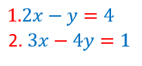
Para solucionar un sistema de ecuaciones por la Regla de Cramer te recomendamos ver atentamente el video,
aunque es un método muy corto es necesario mucha atención. Para iniciar necesitamos que tengas claridad
de que son los siguientes símbolos:
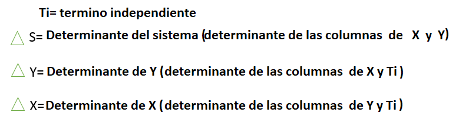
También necesitamos que tengas claro cuales son las columnas
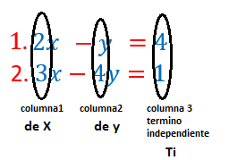
y que además un determinante se saca multiplicando en cruz y restando sus resultados, por ejemplo vamos a sacar
primero el determinante del sistema
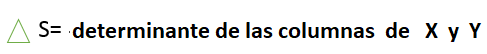
sacamos los coeficientes de X y Y(números que acompañan a las letras X y Y) de la siguiente manera
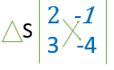
y los multiplicamos en cruz y restamos obteniendo el determinante del sistema igual a -5
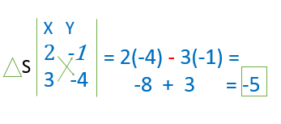
Repetimos el proceso para sacar el determinante de X y Y, pero antes recuerda las columnas
no olvidar que el determinante de X se halla con los coeficientes de la columnas 2 y 3
y el determinante de Y con las columnas 1 y 3 como se muestra en el ejemplo, la columna que va de primero es Ti
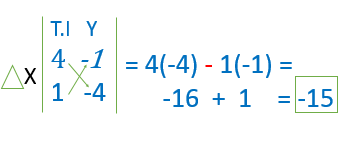
El determinante de X es igual a -15, ahora vamos con el de Y
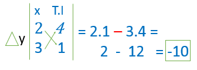
El determinante de Y es igual a -1O, finalmente encontramos los tres determinantes
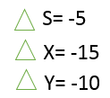
Ahora aplicamos las siguientes formulas
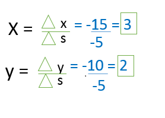
Y encontramos la solución del sistema X=3 Y=2
Actividad
Resolver por el método de la Regla de Cramer los siguientes sistemas de ecuaciones
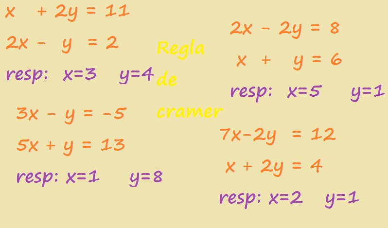

Obra publicada con Licencia Creative Commons Reconocimiento Compartir igual 4.0